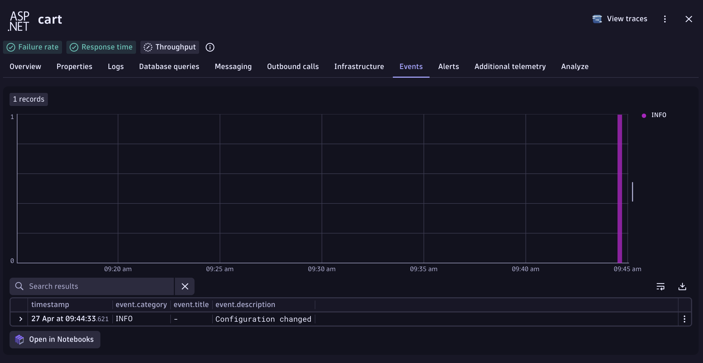
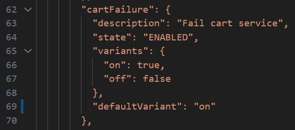
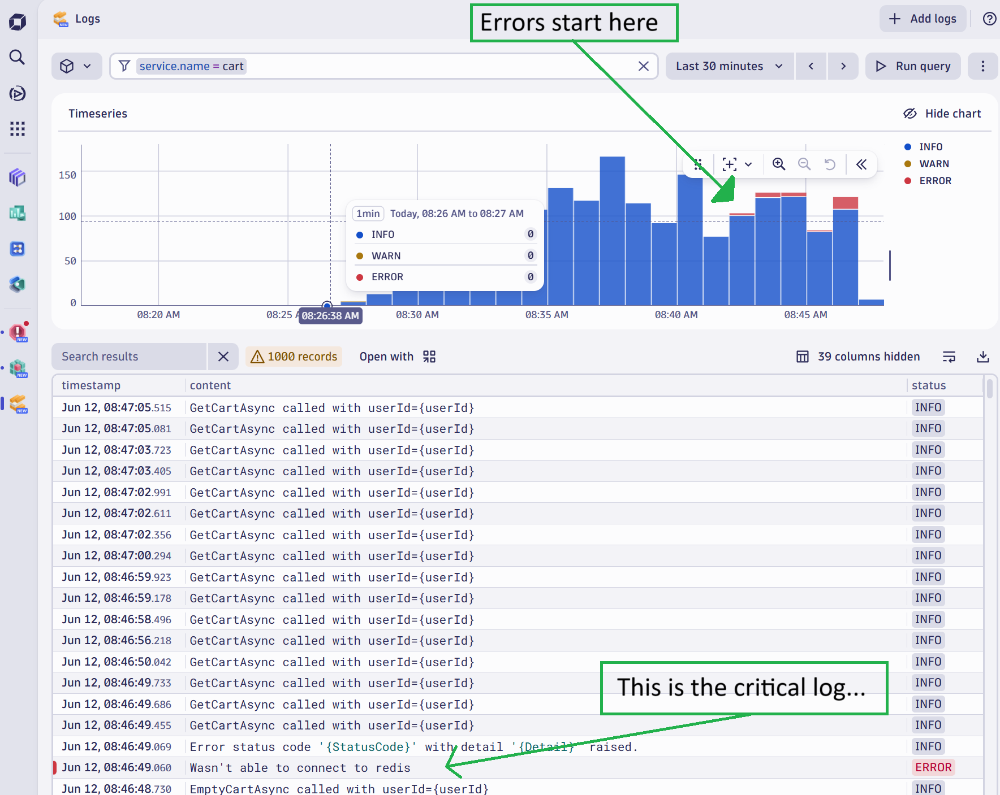
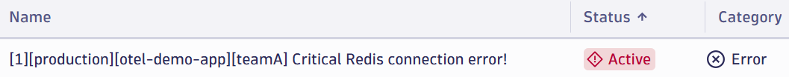

6. Introduce System Change
The application is running correctly. It is time to introduce a change into the system.
This simulates releasing new functionality to your users in production.
Inform Dynatrace#
First, inform Dynatrace that a change is about to occur.
Namely, you are going to make a change to the cart service
by changing the cartFailure feature flag from off to on.
Tell Dynatrace about the upcoming change by sending an event (note: This event does not actually make the change; you will do this manually in the following step).
Run the following:
source .env
python runtime_change.py
You should see this event appear on the Events tab of the cart service screen:

Make Change#
Open this file: flags.yaml
Change the defaultValue of cartFailure from "off" to "on" (scroll to line 69)

Now apply the change by running this command:
kubectl apply -f flags.yaml
You should see:
configmap/flagd-config configured
Restart Flagd#
Normally flagd can detect changes to files in realtime, but in some deployment.release_stages (due to the underlying operating system's ability to watch and notify on file changes) this sometimes does not work as intended.
To be sure that the new value of off is used, restart flagd now:
kukubectl scale deploy flagd --replicas=0
Wait until the flagd pod disappears from the list when you run this command (in our resource constrained deployment.release_stage this take 30s - 1min). Re-run the get pods command until you see it disappear:
kubectl get pods
Now scale flagd back up:
kubectl scale deploy flagd --replicas=1
Be Patient
The application will now generate errors when emptying the users cart. It will do this 1/10th of the time, so be patient, it can take a few moments for the errors to occur.
Generate Your Own Traffic#
There is a load generator running, but you can generate traffic by accessing the site.
Repeatedly add an item to your cart, go to the cart and empty it. Hope you're "lucky" that you generate a backend failure.
Wait for Error Logs#
Use the Logs app and wait until you see ERROR logs appear.

Open Problems App#
In Dynatrace:
- Press
ctrl + k. Search forproblems - Open the problems app
Wait for the problem to appear.

You can also open the cart Service screen to monitor for failures.
- Press
ctrl + k. Search forServices - Open the services app + navigate to the
cart - Monitor the
Failed requestschart